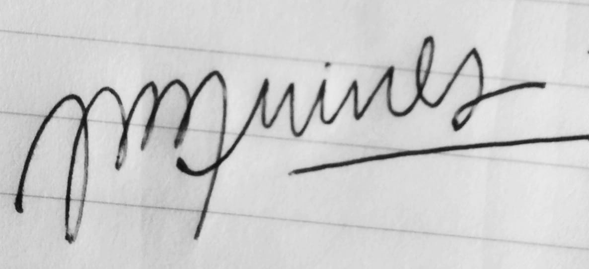
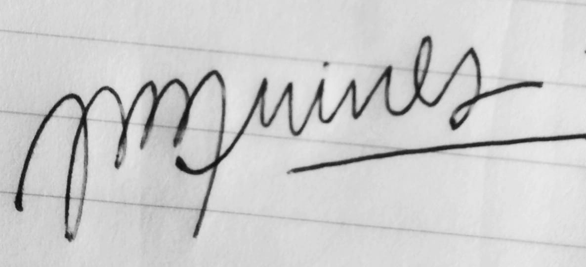

Cuando empecé a aprender que en nuestra región había habido cientos de Golpes de Estado planificados y organizados, donde se torturaba y asesinaba a militantes democráticos cuyas ideas siempre habían hecho progresar a nuestros pueblos (En mi escuela se habló muy poquito de este tema) Siempre me preguntaba cómo era posible que eso sucediera y el mundo siguiera girando, qué hacían los otros Gobiernos cuando eso sucedía, cómo las personas: hermanas, aliadas, enemigas, del norte, del sur, de derecha, de izquierda; podían continuar los días sin siquiera entristecer un poco por esas realidades.
Hoy estamos en presencia de un caso muy claro de complicidad de los medios, los Gobiernos y las ciudadanías. Sucede porque el poder clásico y hegemónico, que otra vez está en crisis, conoce la receta que más le conviene: empobrecernos, desabastecernos, desinventarnos. El orden Liberal, Capitalista, Antinatural, Opresivo y Esclavizador que comanda el primer mundo no puede continuar si nuestros Pueblos progresan, avanzan, se independizan y son soberanos de sus recursos.
En Bolivia, el primer Presidente Indigena de la región, crea un ejemplo de relevancia mundial en superación de problemas estructurales de las sociedades empobrecidas. Sin embargo, el poder de los espacios más rancios y asesinos configura un entramado capaz de, Biblia en mano otra vez, tomar otro espacio más para destejer los nudos construidos de la Justicia Social.